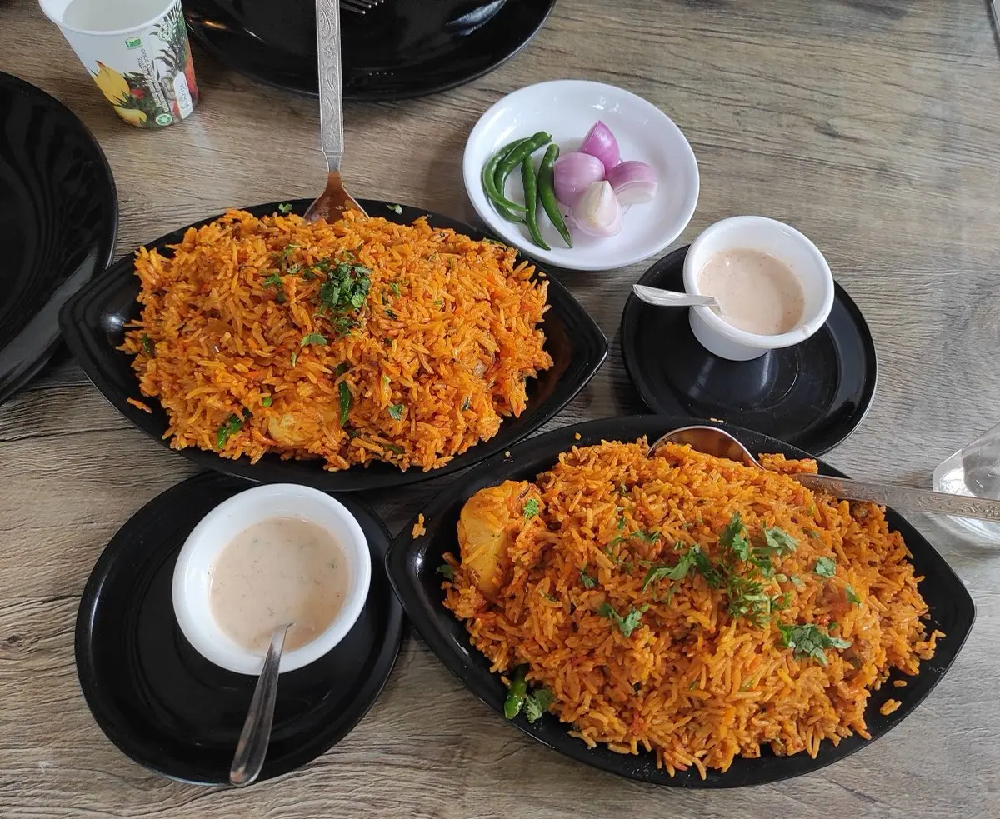
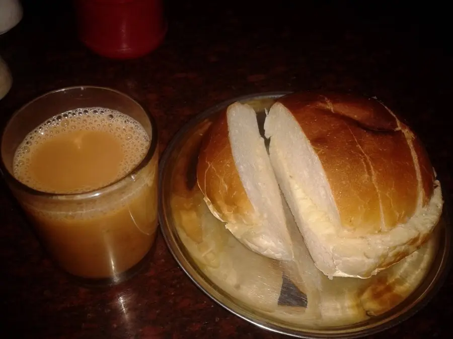
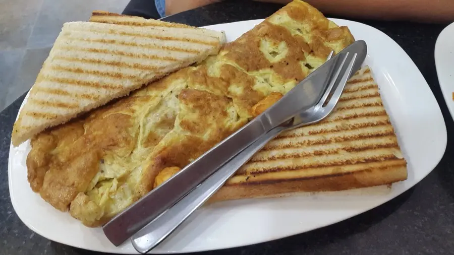
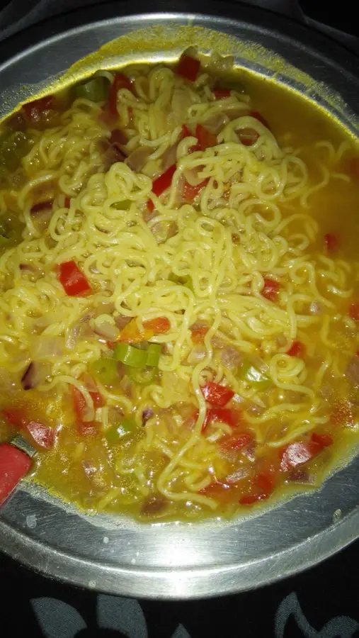
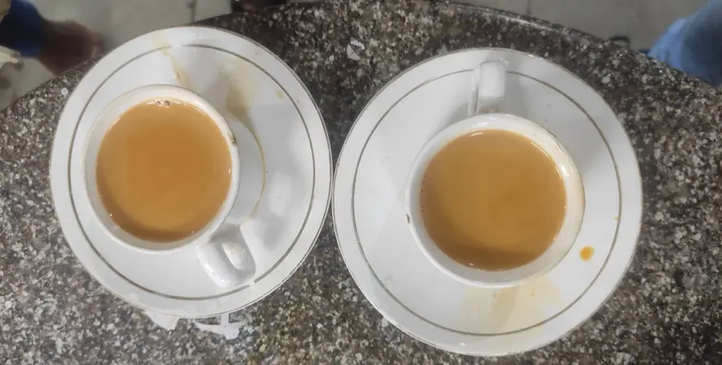
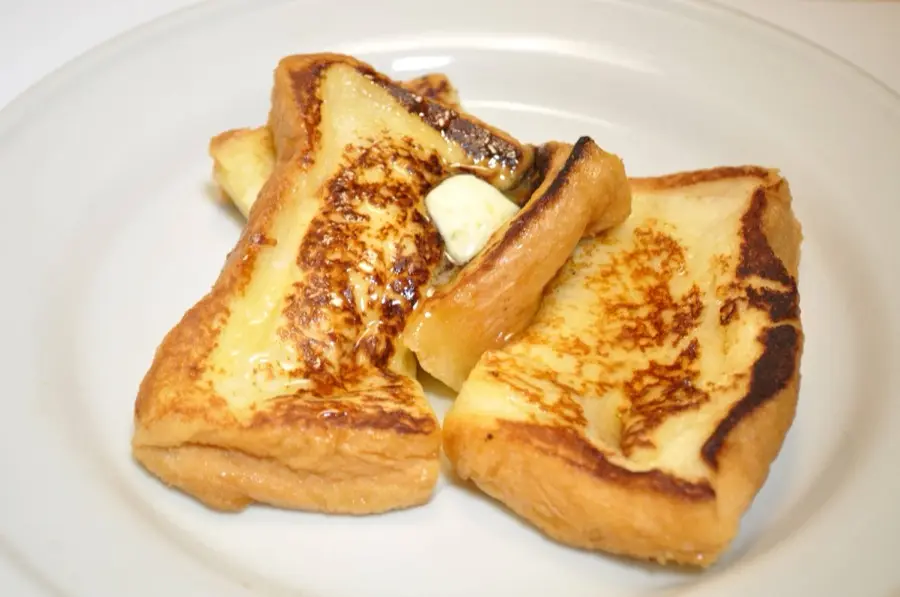
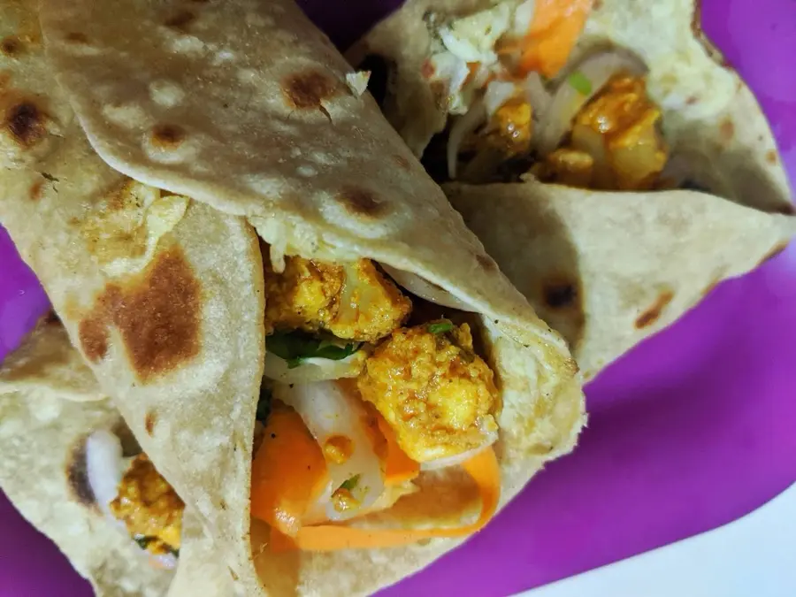
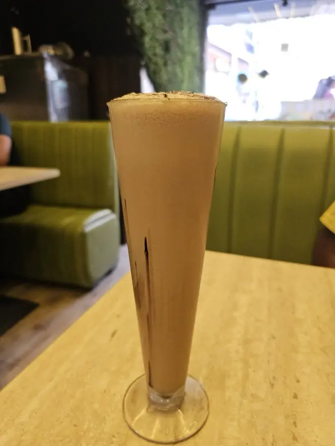
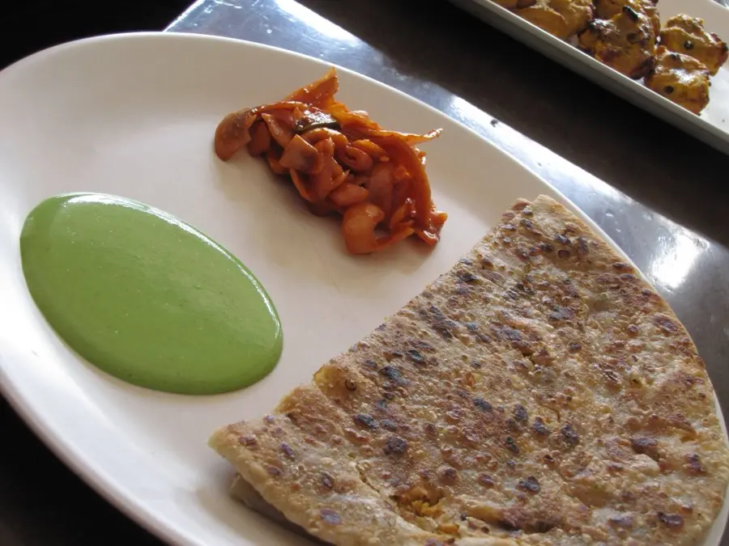

Photo credits
The food photos in "Cafe classics" are illustrative pictures of dishes on our menu, kindly shared by photographers on Wikimedia Commons. They are not photos of our own plates. Thank you to:

Chicken Biryani
"Chicken biriyani- My cafe restaurant - Meghalaya DSC 009.jpg" by Gitika Gayan, Wikimedia Commons, CC BY-SA 4.0.
Changes: resized and converted to WebP for this website; this adapted version is shared under the same licence.
Bun Maska
"Bun Maska Pav.jpg" by Sanket Oswal, Wikimedia Commons, CC BY-SA 4.0.
Changes: resized and converted to WebP for this website; this adapted version is shared under the same licence.
Masala Omelette
"Masala omelette with bread toasties.jpg" by Lillottama, Wikimedia Commons, CC BY-SA 4.0.
Changes: resized and converted to WebP for this website; this adapted version is shared under the same licence.
Masala Maggi
"Masala noodles.jpeg" by Ravindernav, Wikimedia Commons, CC BY-SA 4.0.
Changes: resized and converted to WebP for this website; this adapted version is shared under the same licence.
Irani Chai
"Irani tea.jpg" by Moniruj, Wikimedia Commons, CC0.
Changes: resized and converted to WebP for this website.
French Toast
"French toast 001.jpg" by Ocdp, Wikimedia Commons, CC0.
Changes: resized and converted to WebP for this website.
Paneer Roll
"Paneer kathi roll homemade.jpg" by Shafana jasmine, Wikimedia Commons, CC BY-SA 4.0.
Changes: resized and converted to WebP for this website; this adapted version is shared under the same licence.
Cold Coffee
"Cold Coffee 3.jpg" by Gannu03, Wikimedia Commons, CC BY-SA 4.0.
Changes: resized and converted to WebP for this website; this adapted version is shared under the same licence.
Chicken Kheema Paratha
"Chicken Keema Paratha.JPG" by Kamalesh Bharadwaj, Wikimedia Commons, CC BY-SA 4.0.
Changes: resized and converted to WebP for this website; this adapted version is shared under the same licence.